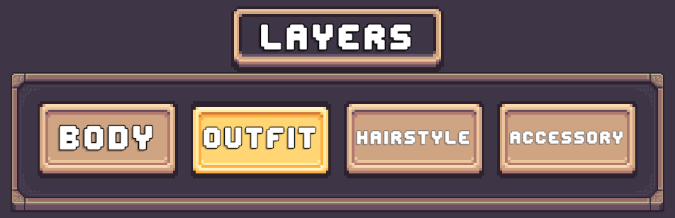

Tab Layer Selector
A Tab Layer Selector is a button. It won't do much on its own. It must be paired with another Layer Selector.
When a Tab Layer Selector is pressed it will change the assigned layer of another Layer Selector.
The Tab Layer Selector can be used as an alternative to a bulk layer selector setup. Instead only requiring one Layer Selector in the menu that can be changed to control different layers using Tab Layer Selectors.
On its own, a Tab Layer Selector does not modify the character.
Instead, it updates the Selected Layer in the Character Layer Selection Manager, which other selectors can respond to.

How It Works
- Each tab represents a specific character layer (Body, Outfit, Hairstyle, etc.)
- When a tab is pressed:
- The Selected Layer in the Character Layer Selection Manager is updated.
- A separate Layer Selector is setup with a handler which listens for changes and updates the Layer Selector to control the newly selected layer.
This allows you to:
- Use one Layer Selector to control multiple layers.
- Reduce UI clutter compared to having one selector per layer.
Note
The Tab Layer Selector was originally designed to work with Grid Layer Selectors & List Layer Selectors but can work with any Layer Selector.
Usage
Tab Layer Selectors are setup the same way as other Layer Selectors, using the Character Layer Selection Manager.
Follow this guide to setup your Tab Layer Selectors. Bulk Selector Setup
Required Companion Setup
Tab Layer Selectors require one additional component to function properly:
CCM Selected Tab Handler
This component listens for changes to the Selected Layer and updates a target Layer Selector.
Pre-Setup Tab Prefabs
Each Layer Selector type includes a Pre-Setup Tab folder.
These prefabs already include the CCM Selected Layer Tab Handler component.
Setup
- Drag a prefab into your Character Creation Menu.
- Assign a reference to the
CCM Character Layer Selection Manager.
Once assigned, setup is complete.
Manual Setup
Follow these steps to manually setup Tab Layer Selectors with its companion Layer Selector.
Step 1️⃣ Add Tab Selectors
Use the Pre-Setup prefabs or follow the Manual Setup guide to setup your Tab Layer Selectors.
Step 2️⃣ Create Handler GameObject
- Create a new GameObject.
- Add the
CCM Selected Layer Tab Handlercomponent. - Assign the Character Layer Selection Manager reference.
Step 3️⃣ Add Target Layer Selector
- Add any Layer Selector to your Menu (From a Core folder)
- Place it under your handler GameObject (recommended but not required)
- Assign it to the Layer Selecter field in the handler.
This selector will dynamically change which layer it controls.
Now enter Play Mode and test it. When you press any of the Tab Layer Selectors, the handler will update the assigned layer in the target Layer Selector.
Prefabs
Location: Prefabs > Character Creator > Modules > Layer Selectors > Tab Selector
Four visual variation folders are included.
All variations contain identical functionality and differ only in appearance.
Core Prefabs
- Layer Tab Selector – Basic tab selector (Just a button).
Not functional on its own.
Pre-Setup Prefabs
- Tab Selectors [Initialize Existing] – Uses tab selectors already present in the prefab hierarchy.
Note
There is no Auto Create variant for Tab Layer Selectors.
Tab Layer Selectors require a reference to the Character Layer Selection Manager which must be set manually.
This means they cannot be created automatically at runtime.